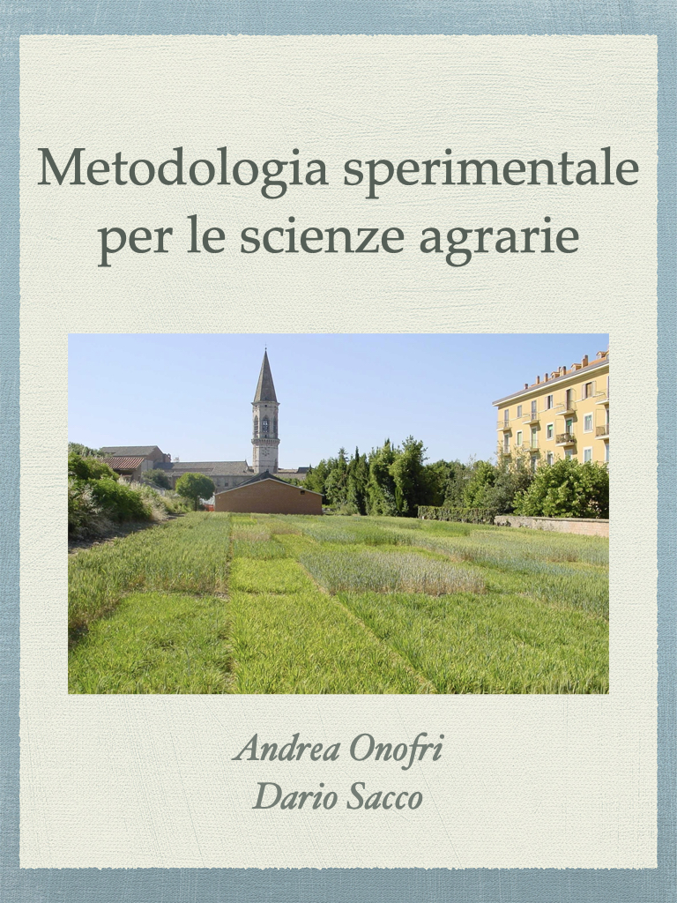

Metodologia sperimentale per le scienze agrarie
Introduzione con R (A.A. 2025-2026)
Premessa

In questo sito troverete l’e-book “Metodologia sperimentale per le scienze agrarie”, che rappresenta la versione italiana di “Field Research Methods in Agriculture” edito dalla Springer, che potrete trovare nel sito web della casa editrice. E’ il frutto di un progetto partito molti anni fa in lingua italiana, inizialmente condiviso con l’amico e collega Dario Sacco, successivamente portato in lingua inglese e perfezionato, fino a fargli assumere una struttura molto diversa da quella iniziale, il che ne ha permesso la pubblicazione in ambito Internazionale.
Dopo la pubblicazione in lingua inglese, mi è sembrato opportuno metterlo a disposizione della comunità scientifica italiana, in forma gratuita; per questo, l’ho ritradotto in italiano e pubblicato nel mio sito web, con licenza Creative Commons Attribution-NonCommercial-NoDerivs 3.0, nella speranza di fornire un minimo contributo alla comprensione dell’importanza del metodo scientifico e, perché no, anche dei suoi limiti.
Prefazione originale
La ricerca di campo è uno degli elementi di volta del progresso scientifico in agricoltura, in quanto si situa in posizione intermedia tra gli esperimenti di laboratorio in condizioni altamente controllate, ma lontane dalla realtà di campo e le prove aziendali, con finalità puramente dimostrative. Infatti, analogamente alla ricerca di laboratorio, la ricerca di campo si basa su protocolli scientificamente rigorosi e fornisce risposte affidabili ai quesiti di ricerca; analogamente alle prove dimostrative, la ricerca di campo si svolge in condizioni “reali”, in modo che i risultati siano direttamente trasferibili agli agricoltori e, più in generale, a tutti gli operatori del settore.
La ricerca di campo deve necessariamente utilizzare attrezzature analoghe a quelle comunemente impiegate in agricoltura, se pur su piccola scala ed, inoltre, deve far fronte a diverse fonti di variabilità casuale, come il meteo, i gradienti di fertilità del terreno, gli attacchi parassitari e le altre intrusioni più o meno dannose. Ciò ha favorito lo sviluppo di una metodologia peculiare, non solo per la progettazione e la realizzazione degli esperimenti, ma anche per l’analisi dei risultati. Purtroppo non è facile trovare testi aggiornati che affrontino le peculiarità della ricerca agraria di pieno campo, che siano dedicati sia ai professionisti che agli studenti delle scienze agrarie e biologiche, che risultino sufficientemente brevi e di facile lettura, e che contengano anche suggerimenti pratici sull’utilizzo di software statistici.
Questo libro si propone di colmare tale lacuna, concentrandosi sulla ricerca di campo e, in particolare, sugli esperimenti ‘parcellari’, che rappresentano il motore fondamentale del progresso in agricoltura e lo strumento primario per valutare e confrontare, ad esempio, genotipi migliorati, pratiche agronomiche innovative, pesticidi e altri metodi di protezione delle piante, nonché i loro effetti collaterali sugli ecosistemi agrari.
Organizzazione del testo
Questo libro tratta di materie come la statistica, che, purtroppo, non trovano largo spazio nei Corsi di Laurea relativi alle Scienze Agrarie; di conseguenza, seguirà un approccio fondamentalmente pratico, orientato al ‘problem solving’ (‘learning by doing’, come dicono gli inglese); in fin dei conti, quando impariamo a guidare un auto ci preoccupiamo di riuscire a raggiungere la nostra destinazione senza incidenti, ma non ci preoccupiamo esattamente di capire quali siano le reazioni chimiche che avvengono all’interno del motore.
Faremo grande uso di esempi e casi di studio, mantenendo la teoria e la matematica al minimo indispensabile, anche se troverete, qua e là, alcune equazioni e brevi calcoli da fare a mano; abbiate pazienza, essi rappresentano il modo migliore per comprendere i fondamenti dei metodi statistici e riuscire a padroneggiarli. Gli esempi sono concepiti, per quanto possibile, come entità indipendenti, in modo che gli approcci proposti possano essere facili da seguire e da riprodurre, adattandoli ai problemi pratici che ognuno di noi si trova ad affrontare nel corso della sua professione.
Sono certo che la gran parte di voi abbia ben chiaro il fatto che gli esperimenti siano l’elemento chiave del progresso scientifico, ma forse non tutti sono coscienti del fatto che essi non sempre sono buoni e non sempre producono dati validi. Il libro inizia proprio trattando la progettazione degli esperimenti (Capitoli 1 e 2) e le tre caratteristiche fondamentali della ricerca, cioè il controllo, la replicazione e la randomizzazione, che costituiscono i tratti distintivi degli esperimenti validi, potenzialmente in grado di produrre risultati scientificamente affidabili. I primi due capitoli descrivono anche i principali elementi della ricerca e le tecniche di disegno sperimentale, considerando gli schemi completamente randomizzati, a blocchi randomizzati, a parcella suddivisa e così via.
Ovviamente, un buon ricercatore non è soltanto in grado di pianificare un esperimento valido ed ottenere quindi risultati scientificamente affidabili. Un buon ricercatore deve essere anche in grado di interpretarne correttamente i risultati, attraverso l’impiego di metodiche di analisi statistica, che consentano di separare l’informazione dal ‘rumore’ di fondo. Per questo motivo, dal Capitolo 3 si inizia a parlare dei fondamenti della statistica descrittiva; vengono presentate diverse semplici statistiche per dati quantitativi, tra cui la media, la mediana, la varianza, la deviazione standard e il coefficiente di correlazione di Pearson. Il capitolo 4 sviluppa invece l’idea di utilizzare modelli statistici per descrivere ed esplorare le relazioni causa-effetto oggetto di studio. Vengono introdotti diversi modelli lineari di comune impiego e fornite indicazioni su come essi possano essere utilizzati per trarre conclusioni affidabili.
I risultati degli esperimenti scientifici sono fondamentalmente soggetti ad un gran numero di effetti ‘perturbativi’ casuali, che vanno sotto il nome generico di “errore” sperimentale. Il capitolo 5 illustra il modo di interpretare questa componente stocastica ed introduce la funzione di densità gaussiana, mostrando come utilizzarla per assegnare un livello di probabilità ai possibili risultati di un esperimento e per simularne i risultati, mediante il cosiddetto metodo Monte Carlo. I capitoli 6 e 7 introducono l’inferenza statistica e i suoi strumenti più importanti, cioè l’intervallo di confidenza e il test d’ipotesi. Il capitolo 8 presenta alcune tecniche molto diffuse per verificare che il modello prescelto fornisca una descrizione accurata dei dati sperimentali e che siano soddisfatti i presupposti di base per l’inferenze ed il test d’ipotesi. Una volta che il model fitting abbia permesso di riassumere i risultati di un esperimento attraverso la stima di ‘parametri’ con alta rilevanza biologica, il capitolo 9 illustra come queste stime possano essere ‘combinate’ tra di loro, in modo lineare e non lineare, per dare risposta ai quesiti biologici più rilevanti.
Infine, i capitoli dal 10 al 12 presentano e discutono diversi casi di studio, basati su set di dati reali raccolti in esperimenti di campo; questi casi di studio vengono utilizzati, oltre che per fissare i concetti già appresi nei capitoli precedenti, anche per introdurre altri tipi di modelli lineari e non lineari, dei quali viene evidenziata la potenziale utilità nella ricerca agraria.
A chi è rivolto questo testo
Questo libro è pensato per un corso introduttivo di biometria da 6 Crediti (circa 54 ore di lezione) ed è adatto a studenti di Corsi di Laurea in Agraria e Biologia, sia di primo che di secondo livello. Inoltre, potrà anche essere utilizzato come testo di auto-apprendimento da professionisti, sperimentatori o ricercatori che desiderino acquisire informazioni introduttive sulla biometria e sul linguaggio di programmazione R, prima di intraprendere un lavoro nell’ambito della ricerca in agricoltura. Siccome è pensato per principianti, questo libro non presuppone alcuna conoscenza pregressa di statistica o programmazione; è un libro introduttivo, il primo passo in questa affascinante disciplina e dovrebbe mettervi nelle condizioni di affrontare studi più avanzati, se mai lo vorrete fare.
Software statistico
In questo libro lavoreremo con il software R, all’interno dell’interfaccia grafica RStudio. Abbiamo scelto questo software per un certo numero di ragioni: in primo luogo, è molto potente ed estremamente diffuso, tanto che avere capacità almeno elementare di lavorare con questo software è spesso richiesta dalle aziende che assumono laureati in agraria.
In secondo luogo, R è gratuito (freeware), cosa che è di solito particolarmente apprezzata dagli studenti.
In terzo luogo, è molto piacevole da utilizzare; anche se riconosco che si tratta di un giudizio personale, vi assicuro che ho visto molti studenti che, dopo aver superato le iniziali difficoltà, rimangono affascinati dal linguaggio e dalla programmazione informatica. Alcuni altri, purtroppo, imparano ad odiarlo… speriamo che nessuno di voi sia tra quelli!
In questo libro daremo per scontata una conoscenza, seppur limitata, di R e dell’ambiente RStudio, anche se abbiamo aggiunto un’appendice (A.13), nella quale troverete tutte le indicazioni necessarie per i principianti. Inoltre, R ha una struttura modulare e le sue potenzialità possono essere notevolmente estese installando packages aggiuntivi. Ne utilizzeremo alcuni anche in questo testo: sono elencati in appendice e dovranno essere installati prima di cominciare lo studio.
Materiale di supporto
Questo libro è associato a un pacchetto R (`statforbiology’) e ad un sito web, dove è ospitato anche un blog di statistica (). Anche il pacchetto R ed il blog sono gratuiti e rilasciati sotto licenza Creative Commons Attribution-NonCommercial-NoDerivs 3.0. Il sito web include diversi casi di studio aggiuntivi, correzioni ed aggiornamenti, che vengono incorporati continuamente, poiché R è un linguaggio in rapida evoluzione. Se lo desiderate, potete contattarmi via e-mail all’indirizzo per commenti e segnalazioni, per i quali vi sarò molto grato.
Ringraziamenti e scuse
Iniziamo con le scuse. In questo libro prenderemo in prestito alcuni termini dalla lingua inglese, la cui traduzione in italiano o non esiste, o, se esiste, non è altrettanto efficace del termine originale. Ad esempio, useremo il termine ‘dataframe’ per riferirci all’oggetto di R, creato con la funzione data.frame(), cioè una tabella di dati a due dimensioni. Inoltre utilizzeremo il termine ‘package’ per riferirci agli omonimi set di funzionalità aggiuntive di R. Useremo anche alcuni acronimi, che sono elencati in seguito.
Inoltre, questo libro mescola le parti scritte con codice R e relativo output, ed è impossibile evitare la discrasia tra i separatori decimali e di elenco adottati da R (. e , rispettivamente) e quelli necessari nella lingua italiano (, e ;). Ci è sembrato innaturale, se non impossibile, costringere R ad adottare le convenzioni della lingua italiana e quindi abbiamo preferito ‘violentare’ la lingua italiana, adottando per questo testo il punto come separatore decimale, in conformità agli standard tipografici internazionali adottati nelle pubblicazioni scientifiche. Non ce ne vogliano i puristi della lingua italiana. Le altre unità e i simboli cercano di seguire le raccomandazioni del Sistema Internazionale (SI).
Per quanto riguarda i ringraziamenti, desidero menzionare, in primo luogo, il mio collega e amico Dario Sacco (Università di Torino), insieme al quale abbiamo iniziato questo progetto editoriale. Me lo ricordo molto entusiasta di intraprendere questa iniziativa ed abbiamo lavorato assieme alla stesura dei primi due capitoli della prima versione in Italiano; purtroppo è scomparso prematuramente, e non ha mai potuto vedere la conclusione del lavoro. Questo libro si basa in gran parte sulle lunghe discussioni che abbiamo avuto durante i corsi di statistica della Società Italiana di Agronomia, e il risultato finale sarebbe stato di gran lunga migliore se avesse potuto beneficiare del contributo continuativo di Dario.
Desidero inoltre ringraziare i miei colleghi del Dipartimento di Scienze Agrarie, Alimentari e Ambientali (Università di Perugia): abbiamo a lungo camminato sulla stessa strada, e sono felice di averla condivisa con voi. In particolare, vorrei ringraziare Dino Alberati, Egidio Ciriciofolo, Gino Covarelli, Marcello Guiducci, Euro Pannacci e Francesco Tei, dai quali ho potuto apprendere molte dettagli sul lavoro di ricerca.
Questo libro deve anche molto alle innumerevoli domande, ai dubbi e alle preoccupazioni che i miei studenti hanno voluto condividere con me. È proprio per cercare di supportare il loro percorso di apprendimento che ho trovato la motivazione per riflettere più a fondo, provare a scrivere con maggiore chiarezza, e spiegare più chiaramente.
Sono inoltre grato a diverse persone che hanno letto questo libro o parti di esso e che, con i loro commenti, hanno contribuito a migliorarne la chiarezza. In particolare, desidero ringraziare Marcin Kozak (College of Media and Social Communication, University of Information Technology and Management in Rzeszow, Poland), Alessia Perego (Dipartimento di Scienze Agrarie e Ambientali, Università degli Studi di Milano, Italia), Hans-Peter Piepho (Institute of Crop Science, Biostatistics Unit, University of Hohenheim, Germany), Christian Ritz (National Institute of Public Health, University of Southern Denmark, Copenhagen, Denmark) e Annamaria Stellacci (Dipartimento di Scienze del Suolo, delle Piante e degli Alimenti, Università degli Studi di Bari, Italia). Naturalmente, ogni eventuale errore che sia rimasto dopo l’ultima stesura è di mia esclusiva responsabilità.
Per ultimo, ma non per importanza, sono profondamente grato al team di sviluppo di R per la disponibilità di questo magnifico linguaggio, nonché per il loro impegno nel preservarne la sua natura freeware. Sono inoltre grato a Yihui Xie e ai suoi collaboratori per la disponibilità di ‘rmarkdown’, ‘bookdown’ e ‘blogdown’, tre pacchetti fondamentali per la redazione di questo testo, nelle due versioni online e a stampa.
Acronimi
In questo libro utilizzeremo alcune abbreviazioni, direttamente proveniente dalla lingua inglese.
- ANOVA: Analisi della varianza (ANalysis Of VAriance)
- CRD: Disegno a randomizzazione completa (Completely Randomised Design)
- CI: Intervallo di confidenza (Confidence Interval)
- DF: Gradi di libertà (Degrees of Freedom)
- EDA: Analisi esplorative (Exploratory Data Analyses)
- LM: Modello lineare (Linear Model)
- LMM: Modello misto (Linear Mixed Model)
- RCBD: Disegno a blocchi randomizzati (Randomised Complete Block Design)
- SD: Deviazione standard (Standard Deviation)
- SE: Errore standard (Standard Error)
- SEM: Errore standard di una media (Standard Error of a Mean)
- SED: Errore standard di una differenza (Standard Error of a Difference)
Perugia, giugno 2026